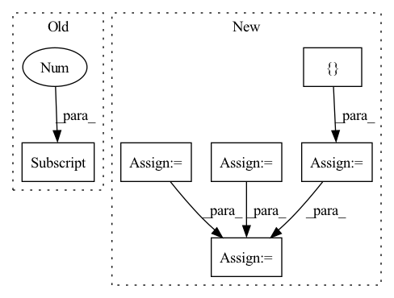

Pattern ID :2039

Before Change
memory_input = outputs[-1]
else:
// combine prev. model output and prev. real target
memory_input = torch.div(outputs[-1] + memory[t-1], 2.0)
// add a random noise
noise = torch.autograd.Variable(
memory_input.data.new(memory_input.size()).normal_(0.0, 0.5))
After Change
outputs = []
alignments = []
stop_outputs = []
t = 0
memory_input = initial_memory
while True:
if t > 0:
if greedy:
memory_input = outputs[-1]
else:
// combine prev. model output and prev. real target
// memory_input = torch.div(outputs[-1] + memory[t-1], 2.0)
// add a random noise
// noise = torch.autograd.Variable(
// memory_input.data.new(memory_input.size()).normal_(0.0, 0.5))
// memory_input = memory_input + noise
memory_input = memory[t-1]
// Prenet
processed_memory = self.prenet(memory_input)
// Attention RNN
attention_rnn_hidden, current_context_vec, alignment = self.attention_rnn(
processed_memory, current_context_vec, attention_rnn_hidden,
inputs)
// Concat RNN output and attention context vector
decoder_input = self.project_to_decoder_in(
torch.cat((attention_rnn_hidden, current_context_vec), -1))
// Pass through the decoder RNNs
for idx in range(len(self.decoder_rnns)):
decoder_rnn_hiddens[idx] = self.decoder_rnns[idx](
decoder_input, decoder_rnn_hiddens[idx])
// Residual connectinon
decoder_input = decoder_rnn_hiddens[idx] + decoder_input
output = decoder_input
stop_token_input = decoder_input
// stop token prediction
stop_token_input = torch.cat((output, current_context_vec), -1)
stop_output = self.stop_token(stop_token_input)
// predict mel vectors from decoder vectors
output = self.proj_to_mel(output)
outputs += [output]
alignments += [alignment]
stop_outputs += [stop_output]
t += 1
In pattern: SUPERPATTERN
Frequency: 3
Non-data size: 6
Instances
Fragment ID: 13863920
Project Name: coqui-ai/tts
Commit Name: 5750090fcd4a6718608c7357e3890f5b2a545ae0
Time: 2018-03-22
Author: egolge@mozilla.com
File Name: layers/tacotron.py
M Class Name: Decoder
N Class Name: Decoder
M Method Name: forward(3)
N Method Name: forward(3)
M Parent Class: nn.Module
N Parent Class: nn.Module
M File Name: layers/tacotron.py
N File Name: layers/tacotron.py
M Start Line: 255
M End Line: 347
N Start Line: 259
N End Line: 359
'>
Before Change
mem = default(mem, lambda: torch.empty(num_memory_layers, b, 0, d, **to(x)))
lmem = default(lmem, lambda: torch.empty(num_memory_layers, b, 0, d, **to(x)))
total_len = mem.shape[2] + lmem.shape[2] + self.seq_len
pos_emb = self.pos_emb[:, (self.seq_len - t):total_len]
next_mem = []
After Change
init_mem = lambda: torch.empty(num_memory_layers, b, 0, d, **to(x))
mem = default(mem, init_mem)
lmem = default(lmem, init_mem)
mem_len, lmem_len = map(lambda t: t.shape[2], (mem, lmem))
total_len = mem_len + lmem_len + self.seq_len
pos_emb = self.pos_emb[:, (self.seq_len - t):total_len]
mem_iter, lmem_iter = map(iterate_tensor, (mem, lmem))
hiddens = []
for ind, (attn, ff) in enumerate(zip(self.attn_layers, self.ff_layers)):
layer_num = ind + 1
use_memory = layer_num in self.memory_layers
memories = map(next, (mem_iter, lmem_iter)) if use_memory else None
if use_memory:
hiddens.append(x)
x = attn(x, memories = memories, calc_memory = use_memory, input_mask = mask, pos_emb = pos_emb)
x = ff(x)
hiddens = torch.stack(hiddens)
out = self.to_logits(x)
// calculate next memory state
next_memory = self.memory_network(lmem, mem, hiddens)
return out, next_memory
'>
Fragment ID: 13863927
Project Name: lucidrains/memory-transformer-xl
Commit Name: cbabe1ae6fa311092a9d0a88116c079a5ad8d790
Time: 2020-07-22
Author: lucidrains@gmail.com
File Name: memory_transformer_xl/memory_transformer_xl.py
M Class Name: MemoryTransformerXL
N Class Name: MemoryTransformerXL
M Method Name: forward(4)
N Method Name: forward(4)
M Parent Class: nn.Module
N Parent Class: nn.Module
M File Name: memory_transformer_xl/memory_transformer_xl.py
N File Name: memory_transformer_xl/memory_transformer_xl.py
M Start Line: 255
M End Line: 296
N Start Line: 306
N End Line: 345
'>
Before Change
x_ft[:, :, :self.n_modes, :self.n_modes], self.fourier_weight[0], self.fourier_weight[1])
out_ft[:, :, -self.n_modes:, :self.n_modes] = self.complex_matmul_2d(
x_ft[:, :, -self.n_modes:, :self.n_modes], self.fourier_weight[2], self.fourier_weight[3])
out_ft = torch.complex(out_ft[..., 0], out_ft[..., 1])
After Change
out_ft = torch.complex(out_ft[..., 0], out_ft[..., 1])
xy = torch.fft.irfft(out_ft, dim=-1, norm="ortho")
// x.shape == [batch_size, in_dim, grid_size, grid_size]
// // // Dimesion X // // //
x_ftx = torch.fft.rfft(x, dim=-2, norm="ortho")
// x_ft.shape == [batch_size, in_dim, grid_size // 2 + 1, grid_size]
x_ftx = torch.stack([x_ftx.real, x_ftx.imag], dim=4)
// x_ft.shape == [batch_size, in_dim, grid_size // 2 + 1, grid_size, 2]
out_ft = torch.zeros(B, I, N // 2 + 1, M, 2, device=x.device)
// out_ft.shape == [batch_size, in_dim, grid_size // 2 + 1, grid_size, 2]
out_ft[:, :, :self.n_modes, :] = self.complex_matmul_x_2d(
x_ftx[:, :, :self.n_modes, :], self.fourier_weight[1])
out_ft = torch.complex(out_ft[..., 0], out_ft[..., 1])
xx = torch.fft.irfft(out_ft, dim=-2, norm="ortho")
// x.shape == [batch_size, in_dim, grid_size, grid_size]
// // Combining Dimensions // //
x = xx + xy
x = rearrange(x, "b i m n -> b m n i")
// x.shape == [batch_size, grid_size, grid_size, out_dim]
'>
Fragment ID: 13863899
Project Name: alasdairtran/fourierflow
Commit Name: 659a21db22124687b87c0b5ab0f4afdebbf139b3
Time: 2021-07-28
Author: alasdair.tran@gmail.com
File Name: fourierflow/modules/fourier_deq.py
M Class Name: SpectralConv2d
N Class Name: SpectralConv2d
M Method Name: forward(3)
N Method Name: forward(3)
M Parent Class: nn.Module
N Parent Class: nn.Module
M File Name: fourierflow/modules/fourier_deq.py
N File Name: fourierflow/modules/fourier_deq.py
M Start Line: 112
M End Line: 126
N Start Line: 88
N End Line: 145